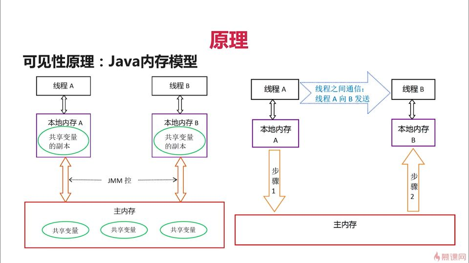

深入浅出Synchronized
序言
同步（英语：Synchronization），指对在一个系统中所发生的事件（event）之间进行协调，一个资源同时只能被一个线程所拥有
Synchronized的作用
能够保证在同一时刻最多只有一个线程执行该段代码，以达到并发安全的效果
Synchronized的两个用法
对象锁
包括方法锁（默认锁对象为this当前实例对象）和同步代码块锁（自己指定锁对象）
- 注意方法锁锁的是当前this对象，如果是两个实例对象的话是不会影响的。
- 同步代码块锁可以自己指定对象，不同的对象锁之间不会相互影响，代码块范围越小越好
1
2
3
4
5
6
7
8
9
10
11
12
13
14
15
16
17
18
19static SynchroizationMethod instance = new SynchroizationMethod();
@Override
public void run() {
// TODO Auto-generated method stub
method();
}
public void method() throws Exception{
System.out.println(Thread.currentThread().getName() + "开始运行");
Thread.sleep(3000);
System.out.println(Thread.currentThread().getName() + "结束运行");
}
// 不加锁的情况下 // 在method方法上加上synchronized
Thread-1开始运行 Thread-0开始运行
Thread-0开始运行 Thread-0结束运行
Thread-0结束运行 Thread-1开始运行
Thread-1结束运行 Thread-1结束运行
类锁
- 指synchronized修饰静态的方法或指定锁为Class对象
- java类可能有多个对象但是只有一个Class对象
- 形式一：在static方法上加synchronized
- 形式二：使用synchronized（*.class）方式
- 类锁锁后访问该类所有的实例方法都会是同步的
1 | |
三点核心思想
- 一把锁只能同时被一个线程获取，没有拿到锁的线程必须等待
- 每个实例都对应有自己的一把锁，不同实例之间互不影响；例：锁对象是*.class以及synchronized修饰的是static方法的时候，所有对象公用的一把锁
- 无论是方法正常执行完毕或者方法抛出异常，都会释放锁
可重入
什么是可重入？
指的是同一线程的外层函数获得锁之后，内层函数可以再次获得锁
好处：避免死锁，提升封装性
粒度：线程而非调用
- 情况1：一个方法是可重入的
- 情况2：可重入不要求是同一个方法
- 情况3：可重入不要求是同一个类中
1
2
3
4
5
6
7
8
9
10
11
12
13
14
15
16
17
18
19
20
21
22
23
24
25
26
27
28
29
30
31package synchronization;
public class SynchronizedReentrant implements Runnable{
@Override
public void run() {
// TODO Auto-generated method stub
method01();
}
public void method01() {
synchronized (this) {
System.out.println("method01");
method02();
}
}
public synchronized void method02() {
synchronized (this) {
System.out.println("method02");
}
}
public static void main(String[] args) {
SynchronizedReentrant synchronizedReentrant = new SynchronizedReentrant();
new Thread(synchronizedReentrant).start();
}
}
//运行结果
method01
method02
不可中断
性质
一旦这个锁已经被别人获得了，如果我还想获得，我只能选择等待或者阻塞，直到别的线程释放这个锁。如果别人不释放，我将永远等待下去形成死锁
1
2
3
4
5
6
7
8
9
10
11
12
13
14
15
16
17
18
19
20
21
22
23
24
25
26
27
28
29
30
31
32
33
34
35
36
37
38
39
40@Override
public void run() {
// TODO Auto-generated method stub
if("Thread-0".equals(Thread.currentThread().getName())) {
method1();
}else {
method2();
}
}
public void method1() {
synchronized (lock1) {
try {
Thread.sleep(3000);
} catch (InterruptedException e) {
// TODO Auto-generated catch block
e.printStackTrace();
}
synchronized (lock2) {
}
}
}
public void method2() {
synchronized (lock2) {
try {
Thread.sleep(3000);
} catch (InterruptedException e) {
// TODO Auto-generated catch block
e.printStackTrace();
}
synchronized (lock1) {
}
}
}
public static void main(String[] args) {
new Thread(instance).start();
new Thread(instance).start();
}
原理
加锁和释放锁的原理：现象、时机、深入JVM看字节码
从一个简单的java类字节码来看
1
2
3
4
5
6
7
8
9
10
11
12
13
14
15
16
17
18
19
20
21
22
23
24
25
26
27
28
29
30
31
32
33
34public class a{
public void test(){
synchronized(this){
}
}
}
// 编译成字节码后关键部分
public void test();
descriptor: ()V
flags: ACC_PUBLIC
Code:
stack=2, locals=3, args_size=1
0: aload_0
1: dup
2: astore_1
3: monitorenter
4: aload_1
5: monitorexit
6: goto 14
9: astore_2
10: aload_1
11: monitorexit
12: aload_2
13: athrow
14: return
Exception table:
from to target type
4 6 9 any
9 12 9 any
LineNumberTable:
line 3: 0
line 4: 4
line 5: 14可以从上字节码看出synchronized是通过monitor来实现同步的，有两个monitorexit是因为可能对应多种退出方式如正常退出和发生异常退出，一个monitorenter对应多个monitorexit
可重入原理：加锁次数计数器
- JVM负责跟踪对象被加锁的次数
- 线程第一次给对象加锁的时候，计数变为1.每当这个相同的线程在此对象上再次获得锁时，计数器会递增（这就是为何知道当前代码同步块是否被阻塞，当为0释放锁后才能有机会获得锁）
- 每当任务离开时，计数器递减，当计数为0的时候，锁被完全释放
保证可见性的原理：内存模型

synchronized的缺陷
- 效率低：锁释放的情况少、试图获得锁不能设定超时、不能中断正在试图获得锁的线程
- 不够灵活（读写锁更灵活）：加锁和释放的时机单一，每个锁仅有单一的条件（某个对象），可能是不够的
- 无法知道是否成功获得锁
总结
JVM会自动通过使用monitor来加锁和解锁，保证了同时只有一个线程执行指定代码，从而保证了线程安全，同时具有可重入和不可中断的性质
本博客所有文章除特别声明外，均采用 CC BY-SA 4.0 协议 ，转载请注明出处！